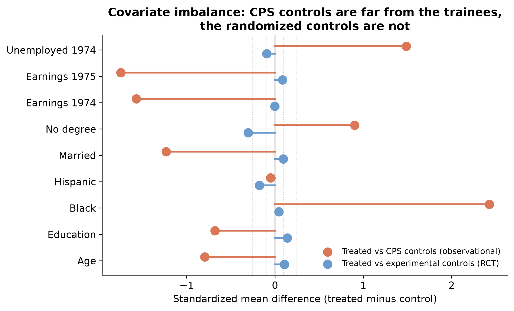
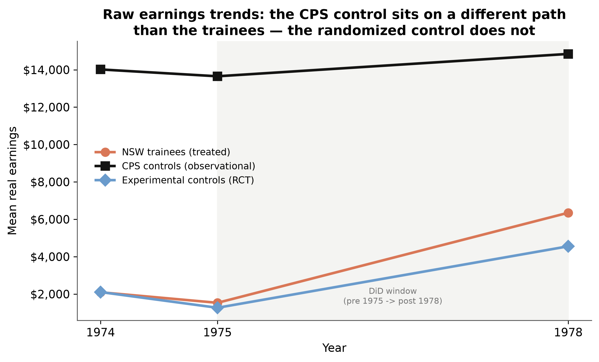
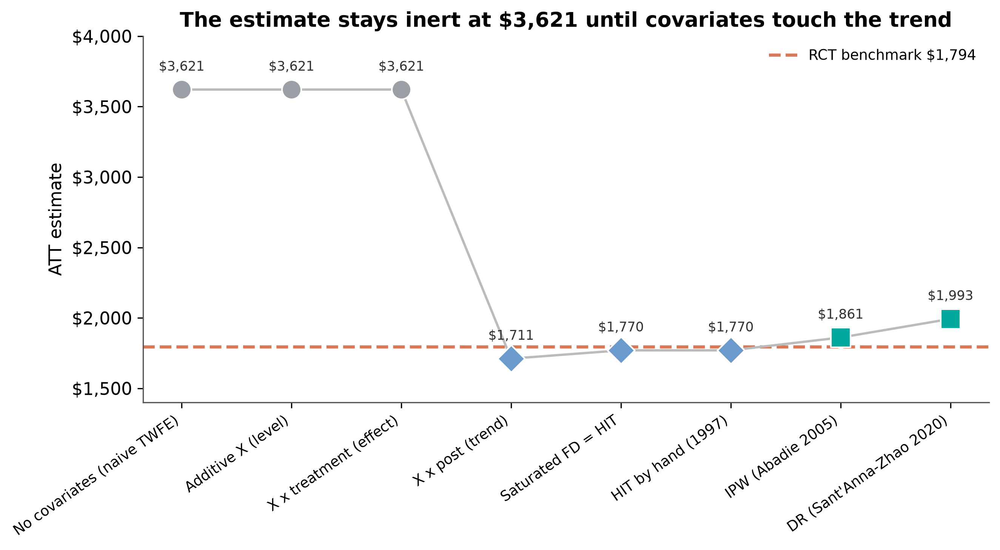
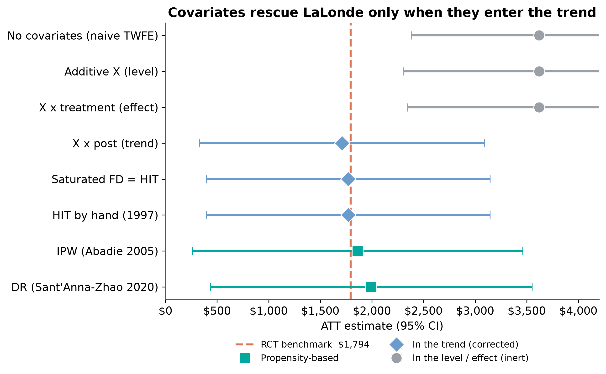
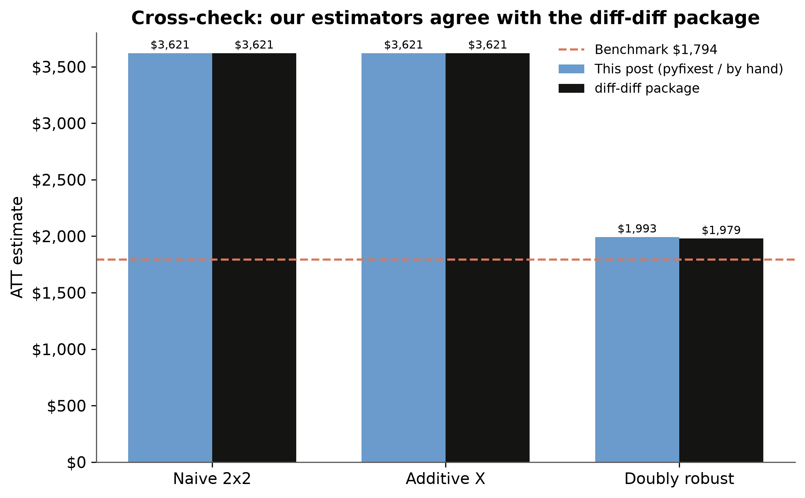

flowchart LR
Q{"Where does X enter?"}
Q -->|level / effect| I["inert · ~3,621"]
Q -->|trend / propensity| C["corrected · ~1,794"]
C -.recovers.-> B["RCT benchmark 1,794"]
The LaLonde test in Python — when do covariates rescue a DiD?
Nagoya University (GSID)
July 17, 2026
Act I
A program trained disadvantaged workers. A randomized trial found it raised earnings by about $1,794.
Throw away the randomized control group, swap in a survey of ordinary Americans, and run the usual difference-in-differences with covariates. Do you still recover $1,794?
Robert LaLonde asked exactly this in 1986 — and launched the credibility revolution when the answer was “no.”
Following Scott Cunningham’s Mixtape Substack, we reproduce the test in Python.
Tip
Swapping the experimental control for CPS changes the ATE, but the treated group stays — so the ATT target is unchanged at $1,794.

CPS controls differ from trainees by +2.3 SD on race and −1.6 SD on prior earnings. The randomized controls do not.

The CPS control sits on a different level and slope. Assuming the trainees would have followed it is not credible — this is where covariates must work.
The 2×2 DiD ATT is computed identically by:
We use the saturated form — it is the one that lets us add time-invariant covariates in different places and watch what happens.
Act II — where does the covariate enter?
A covariate \(X\) can enter a DiD in three fundamentally different places:
| Placement | Formula | What it changes |
|---|---|---|
| Level | \(+ X\) | the intercept (additive control) |
| Effect | \(X \times D\) | the treatment effect (heterogeneity) |
| Trend | \(X \times \text{post}\) | the counterfactual trend |
Only the last one addresses why the naive estimate is wrong. Watch the estimate as we climb the ladder.
Time-invariant covariates in the level or the effect never touch the control’s trend. Nothing moves.
The instant covariates bend the counterfactual trend, the estimate snaps to the benchmark.

flowchart LR
Q{"Where does X enter?"}
Q -->|level / effect| I["inert · ~3,621"]
Q -->|trend / propensity| C["corrected · ~1,794"]
C -.recovers.-> B["RCT benchmark 1,794"]
Covariates in DiD are not a robustness knob — they perform a function: satisfying conditional parallel trends and relaxing constant treatment effects.
Act III


The diff-diff package matches the naive/additive numbers exactly and lands within $14 of the by-hand doubly-robust estimate.
Trust the pattern, not the decimal
Every corrected estimate’s 95% CI spans roughly $400 to $3,100; the benchmark itself has SE ≈ $671.
The $59 gap between Spec B and Spec C is noise. What is trustworthy is the clean split: trend-ignoring specs are all wrong the same way; trend-modeling specs all move to the truth. Reliability comes from stability across specifications and across datasets, not one lucky hit.
Packages: pyfixest, diff-diff, causaldata.